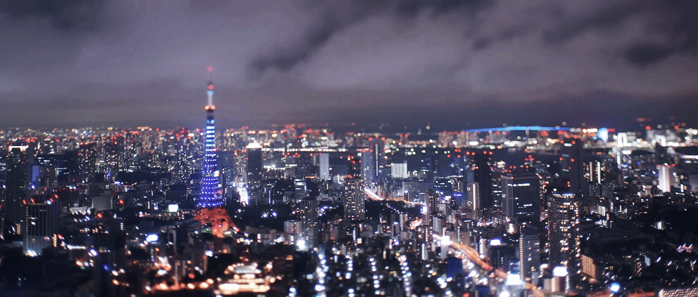

Yellowstone


North America
Yellowstone is the first national park in the United States. It covers over 2.2 million acres, and provides an opportunity to see wildlife and explore geothermal areas. In fact, Yellowstone contains about half the world’s active geysers.
These unique opportunities also bring out a lot of bad decisions among the tourists. Every year visitors injure themselves or the wildlife by getting close to the animals. You can see examples of people making bad decisions by visiting Yellowstone National Park: Invasion of the Idiots, Tourons of Yellowstone, or Cowboy State Daily.
Photo Gallery


Colleen van Lent
Sofia


Bulgaria
Sofia is the capital city of Bulgaria, a country located in Eastern Europe. It is part of the European Union and the primary language spoken is Bulgarian. The city’s population is around 1.3 million. In addition to its urban structures, Sofia also contains a mountain peak called “Vitosha”.
Vitosha is located 30 minutes from the capital’s center, and can be reached by foot, car, and by lift. The peak has an elevation of 7,520 feet and during the summer months the average temperature is around 64 degrees fahrenheit. This makes it a great sight for any type of traveler who seeks the outdoors.
Photo Gallery


Jane Wilmot
Tokyo

Asia
Tokyo, originally named Edo, emerged in 1603 as a fishing village. It quickly gained political power after a ‘Shogunate’, or dictatorship, took control of the area. Today Tokyo and its immediate surroundings are home to the most populated metropolitan area, with a staggering 37 million people residing in the region. Tokyo is also home to the largest urban economy in the world, and leads Japan in business and industrial economies.
Tokyo is home to 23 special wards - areas like municipalities.These areas have increased monetary control over their immediate areas, with political powers such as their own mayor and assembly. Being the cultural, political, and business center of Japan, Tokyo is also home to a great public transport system. The city has two of its own commercial airports, as well as a super-express railway.
Photo Gallery


Aaron Huang
Paris

France
Paris, often referred to as the "City of Light," is a timeless metropolis that captivates the world with its unparalleled blend of history, culture, and elegance. Nestled along the picturesque Seine River, this enchanting capital of France is a living testament to art, fashion, and gastronomy. From iconic landmarks like the Eiffel Tower, Notre-Dame Cathedral, and the Louvre Museum to its charming cobblestone streets, chic boutiques, and world-class cuisine, Paris exudes an undeniable allure that draws millions of visitors each year. Whether strolling along the Seine's banks, savoring a croissant at a sidewalk café, or exploring its rich artistic heritage, Paris never fails to leave an indelible mark on those fortunate enough to experience its inimitable charm..
Paris, often called the "City of Light," is a captivating blend of timeless charm and modern vibrancy. Its iconic landmarks like the Eiffel Tower and Louvre Museum coexist harmoniously with chic boutiques, quaint cafes, and a thriving art scene. Paris is where history and culture intertwine effortlessly, making it a city that beckons visitors with its unique blend of elegance and energy.
Photo Gallery
Tim Keller